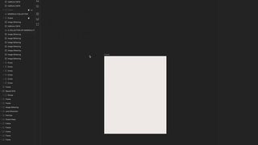

点封面在页面里播放（Vimeo / YouTube / X 需要代理；Vimeo 若没自动开始，再点一下播放键）。觉得好就点「喜欢」，有想法就写在下面的框里保存，我每天出日报前会读，存进偏好和审美库；会多找同类，但每天仍保持类型分散。
目录 01 The 64 sugar cubes puzzle02 Bass X Machina Opening Titles03 Text Character Animations with GSAP04 Cinematic. Period.05 how it works（滚动驱动的 emoji 地球）06 Your Map Shows Antarctica Wrong07 Levi's — Let's Get Fuzzy08 it's just one piece, how hard can it be?09 Why are Spiral Escalators so rare?10 FIRESTARTER（K/DA 官方 MV）－ 看完剔除（12 条）拆 细拆：3Blue1Brown 方块谜题
01 代码动画 知识讲解
The 64 sugar cubes puzzle
3Blue1Brown · YouTube 2026-07-24 · 超过 30 天 【看过视频】（完整看过）
55 秒全片已下载并完整看过；今天的细拆
画面上方居中的衬线字体未识别（像 LaTeX 数学衬线体）
好在哪 55 秒竖屏讲一道奥数题：纯黑底上一个 4×4×4 的方块，只有白、青、米黄三种颜色。方块随旁白「64 sugar cubes」散开又合上，然后把无关的小块压暗，只留一种颜色，中心点黄点、连红线，再把红线抽到上方排成一排比长短可借 讲「结构里藏着什么规律」可以照抄：无关部分压暗而不是删掉，网格还在当背景。快动作后停 1 到 3 秒让人看清。细拆见文末
展开全文
02 片头片尾 MG
Bass X Machina Opening Titles
BUCK（Netflix） · YouTube / Stash 11-03 【看过画面（抽帧）】
YouTube 64 秒全片已下载，抽帧看过；配乐是 Janelle Monáe 的歌
片名字体未识别
好在哪 Netflix 11 月 3 日上线的动画西部剧片头，64 秒。只用红、黑、米白、深蓝几种颜色，画面像宣传海报：警长星章、星条旗、骑马的剪影、荒漠里的脚印，一个接一个叠出来。结尾黑底上米白粗衬线字「BASS X MACHINA」，红色的 X 像刷上去的可借 限定三四种颜色、全用剪影，是做系列片头最稳的办法，换素材也不乱。BUCK 说灵感来自宣传海报，讲历史题材可以借这个味道
展开全文
03 字体版式 代码动画
Text Character Animations with GSAP
Codrops · X 11-03 【看过画面（抽帧）】
13 秒全片已下载，抽帧看过；字体未识别
好在哪 一组逐字母文字动画，共 19 种，其中 4 种用了 WebGL。深色渐变底，白色细无衬线字，比如「ALL AT ONCE」「IN ONE STROKE」「WORD BY WORD」，每个词用不同方式出场：红色细条扫过、字母乱码再变回来、红点跳一下。每个词上方有一行很小的等宽字说明可借 代码开源，逐字母拆开再错开时间出场的思路可以直接搬进 Remotion。一个词只用一种出场方式、只用一个红色强调，比全套特效更干净
展开全文
04 UI动效 转场
Cinematic. Period.
60fps（收录的 App） · X 11-03 【看过画面（抽帧）】
6 秒全片已下载，抽帧看过；和你点过喜欢的 60fps 是同一个号
好在哪 6 秒的手机界面：白色页面上一张「Single use」的虚拟 Visa 卡，一层黑色像墨一样从下往上漫过整张卡，卡面变成深色，再退回白色界面可借 用一层「墨」盖过去再退开，比直接切换更有仪式感。讲产品「状态变化」时（比如开启、关闭）可以借这个做转场
展开全文
05 代码动画 UI动效
how it works（滚动驱动的 emoji 地球）
jhey · X 11-03 【看过画面（抽帧）】
21 秒全片已下载，抽帧看过；原作品之前看过，这条是新的拆解版
好在哪 21 秒讲自己做的 emoji 地球是怎么动的：黑底，中间是由 emoji 拼成的球，左上角放一小段 CSS 代码，几条彩色标注线指着球体，比如「you scroll back an invisible scroller」。画面里还会弹出按了哪个键可借 讲代码原理的好模板：成品放中间不动，代码放角落，用带颜色的标注线把「这行代码」和「这个效果」连起来。做技术讲解可以直接学
展开全文
06 知识讲解 数据可视化
Your Map Shows Antarctica Wrong
Cleo Abram · YouTube 11-03 【看过画面（抽帧）】
38 秒全片已下载，抽帧看过
好在哪 38 秒竖屏讲地图：一张印着 Spilhaus 投影的地图平放在桌上，海洋连成一整块，南极在中间。再换成一个地球，洋流用红蓝圆圈和箭头绕着南极转，下面配粗体大字幕可借 把地图做成桌上的实物再动起来，比纯平面图更有空间感。讲「换个角度看」的选题可以学：同一个数据，先给熟悉的样子，再换投影
展开全文
07 实物动画
Levi's — Let's Get Fuzzy
Blinkink（Stevie Gee & Essy May） · Vimeo / Stash 11-03 【看过画面（抽帧）】
60 秒全片已下载，抽帧看过；字体未识别
好在哪 60 秒定格动画圣诞广告：雪夜小木屋，窗外冰柱后面一双红眼睛，像恐怖片开头。最后进门的是一只穿红毛衣的雪人怪，屋里人也都穿着毛衣，结尾「Let's Get Fuzzy」可借 先按恐怖片的节奏铺悬念，最后一下反转成温馨，60 秒里节奏很完整。Stash 写到搭了 400 棵手工小树、三个不同尺寸的木屋，微缩场景的质感就是这么来的
展开全文
08 UI动效 3D质感
it's just one piece, how hard can it be?
jhey · X 11-04 【看过画面（抽帧）】
X 21 秒全片已下载，抽帧看过
好在哪 21 秒的网页小玩笑：点「I'm not a robot」，弹出拼图验证码，拼图块突然炸开成一片 3D 小块在空中翻，再拼回一张黑白照片，最后提示验证失败可借 把平面界面「炸」成 3D 碎片再拼回去，是很抓眼的开场或转场。讲 AI 识别、验证码这类话题时可以直接借这个画面
展开全文
09 3D质感 知识讲解
Why are Spiral Escalators so rare?
Jared Owen · YouTube 2026-08-31 · 超过 30 天 【看过画面（抽帧）】
2 分钟全片已下载，抽帧看过
好在哪 2 分钟竖屏讲螺旋扶梯：灰蓝色的 3D 剖面模型，台阶边缘涂黄色，扶手、桁架一层层拆开，用黑底白字的小标签标名字。镜头绕着模型慢慢转可借 机械讲解的标准做法：模型只用一两种灰，关键部位才上亮色，拆开时一层一层来。Three.js 做剖面讲解可以照这个配色
展开全文
10 MG 转场
FIRESTARTER（K/DA 官方 MV）
Fortiche（League of Legends） · YouTube 10-19 【看过画面（抽帧）】
全片 3 分 27 秒，只下载、看了前 2 分钟
好在哪 Fortiche 做的动画 MV：手绘质感的 3D 人物，紫色和火焰橙两种主色。镜头跟着节拍切，人物从暗处走进火光，碎片和火星一起往镜头飞可借 今天唯一一条偏热闹的，放进来做对比。可以学它的转场：用火光、碎片挡住画面的一瞬间换场景，观众几乎察觉不到剪辑点
展开全文
看完剔除（12 条） 
Stef Bruce（Codrops 转发） · 设计软件里的操作录屏，做的是平面海报，跟视频动效关系远
jhey · 5 秒的小循环，没有讲解也没有上下文
Sam Brown × Electric Theatre Collective · 实拍加 CG 巨人的剧情广告，主要看表演，动效手法少
Bill Plympton · 之前已经看过这条，不重复推
Motion Plus Design · 和 10-28 推过的同一个活动预告很像，黑底白字报讲者名，新东西少
今日细拆 · 第 1 条
55 秒，一个方块怎么把一道数学题讲清楚 【看过视频】（完整看过），时间点是大约值 3Blue1Brown 的竖屏短片「The 64 sugar cubes puzzle」。画面几乎只有一个 4×4×4 的方块，却靠「压暗、加点、连线、抽出来比」四步把题讲明白。用 Three.js 或 Remotion 做讲解视频，这条几乎可以一帧一帧照着学
画面长什么样 纯黑背景，方块只用白、青、米黄三种颜色 标注只用两种：红色线，黄色点和小刻度 小方块没有光影，是平涂色，每块都描一圈细白边（Three.js 里叫 EdgesGeometry 的效果） 文字在画面上方居中，是数学书那种衬线字体。字体：未识别（像 LaTeX 数学衬线体） 逐段看（秒数是完整看片记下的） 0–6 秒：方块出场，镜头绕着竖轴慢慢转，文字淡入 6–12 秒：旁白说到「64 sugar cubes」那一下，小方块往外炸开，间隔均匀；说到「brown」时快速收回，落地很干脆（快进慢停的缓动）。镜头停转，锁住不动 12–17 秒：要突出一种颜色时，其他小块降到大约 15% 透明度，颜色和描边一起压暗，但不消失，网格还在当背景。接着多余的蓝块也压暗，只剩 12 块 17–22 秒：每块中心弹出一个黄点，带一点回弹；6 对点之间画出红线。镜头只转一下，证明这些线真的在 3D 空间里 22–31 秒：6 条红线脱离方块，飞到上方，转成竖直，排成一排（从 3D 变成平面标注），两端加黄点，中间加小刻度，表示「一样长」。下面的蓝块淡成虚影 31–38 秒：标注淡出，方块恢复原样；颜色快速洗牌 4 到 5 次，每次约 0.2 秒，镜头不动 38–50 秒：停在白色那一种配色，用同一套步骤再做一遍，这次是 12 块白色。42 秒起镜头开始慢慢绕转一直到结尾，让你看到透视变了线还是一样长；46 秒再抽一次红线 50–55 秒：上方的平面红线不动，下面的虚影方块继续转，然后淡出到黑 最值得学的是节奏 每个动作都很快，做完就停 1 到 3 秒不动，给人读画面的时间 代码做的动画常常显得「躁」，就是因为一个补间接一个补间，中间不停 镜头只在要证明什么的时候才动：一下转动证明线在 3D 里，最后的慢转证明长度不受透视影响 动作卡在旁白的词上：说「64」就炸开，说完就收回 Three.js / Remotion 怎么做（做法建议，不是原片用的工具） 方块：用 InstancedMesh，或者直接 64 个 Mesh，每块加 EdgesGeometry + LineSegments 描白边。材质用 MeshBasicMaterial，不打光就是平涂效果 压暗不删除：给每块的 opacity 和颜色做补间，比如透明度 1 到 0.15，颜色往黑色插值，描边同步变暗。记得 transparent 设为 true 黄点出场：scale 从 0 用 spring 弹到 1，Remotion 里直接用 spring()，调低 damping 就有一点回弹 红线画出来：用虚线的 dashOffset 从整条长度减到 0，或者把线沿方向的 scale 从 0 放到 1 镜头：平时锁死，只在要证明立体或透视的段落才绕转 节拍之间留停顿帧：在时间轴上把每个动作之间空出 30 到 90 帧（30fps 下就是 1 到 3 秒） 关键帧对齐旁白：先把配音的字级时间戳导出来（比如用 Whisper），把「炸开」「收回」这些动作的起点直接写成某个词的帧号 放到 AI 科普里怎么用 讲模型结构、数据分布这类「藏在整体里的规律」时，先给一整块完整的东西，再压暗无关部分，只留要讲的那一组；最后把要比较的东西抽出来摆成一排平面对比。每一步做完停一下，比一路动不停更好懂
看原片 ↗
信源：Stash、YouTube、Vimeo、X。全程只读浏览，没有点赞、关注、评论或转发。